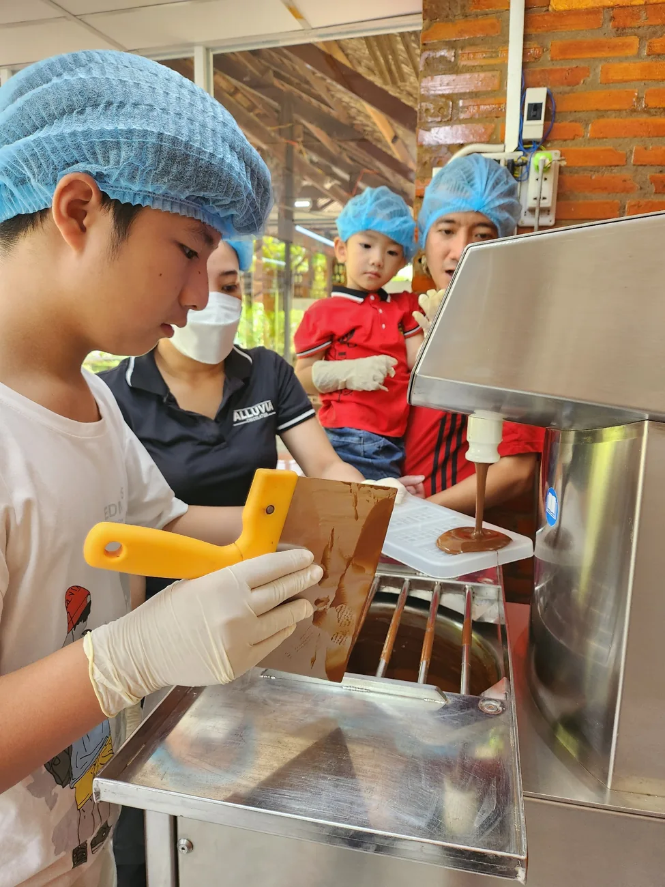
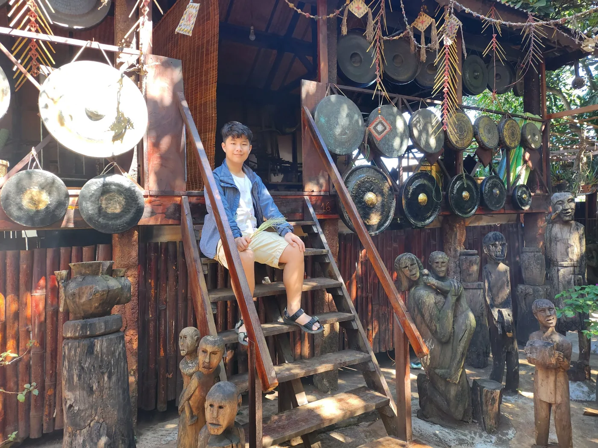
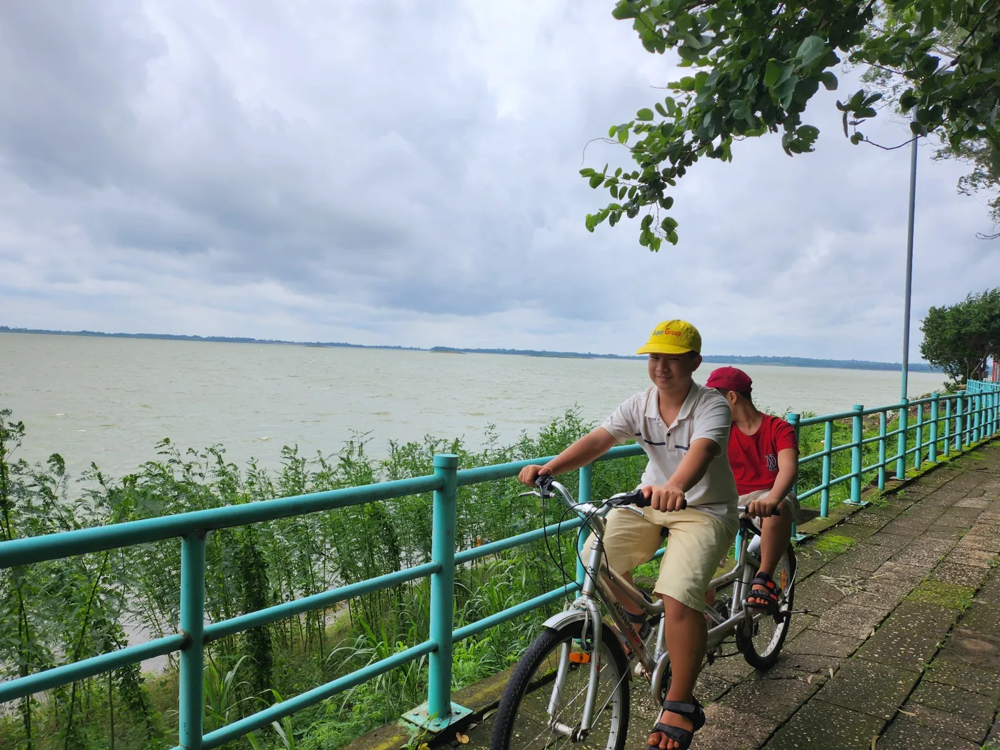
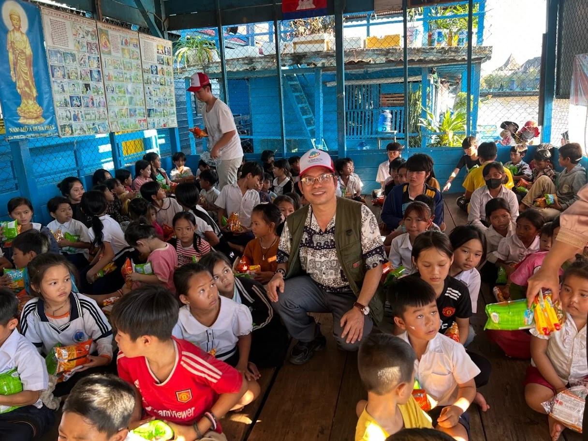

More than the lab.
Music, community, and the experiences that shape how I see the world.
Music & performance
Performed as a bassist, pianist and guitarist at community events, including holiday celebrations.
Animal welfare
In 2024, I volunteered with Laws4Paws Vietnam, helping care for rescued dogs, maintain the shelter, support feeding and rehabilitation routines, and encourage student involvement in animal welfare.
Conservation
Explored biodiversity with Gia đình em yêu thiên nhiên Việt Nam, learning about reptiles, butterflies, beetles and gymnosperms, alongside sea turtle conservation and tree-planting activities.
Sports & interests
Enjoys badminton, football and exploring questions beyond the classroom.

Small moments, lasting curiosity.
A few glimpses of everyday life—trying something new, exploring places, and enjoying time beyond school.


